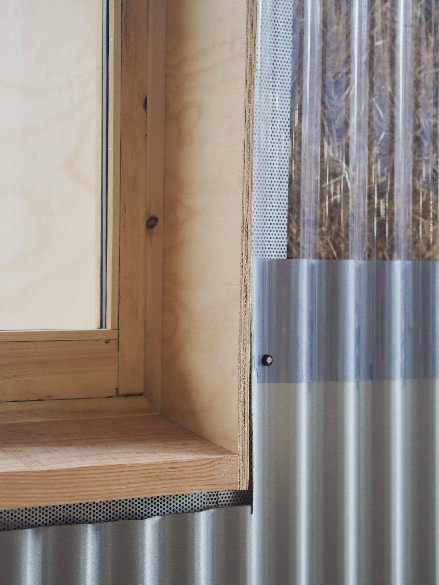
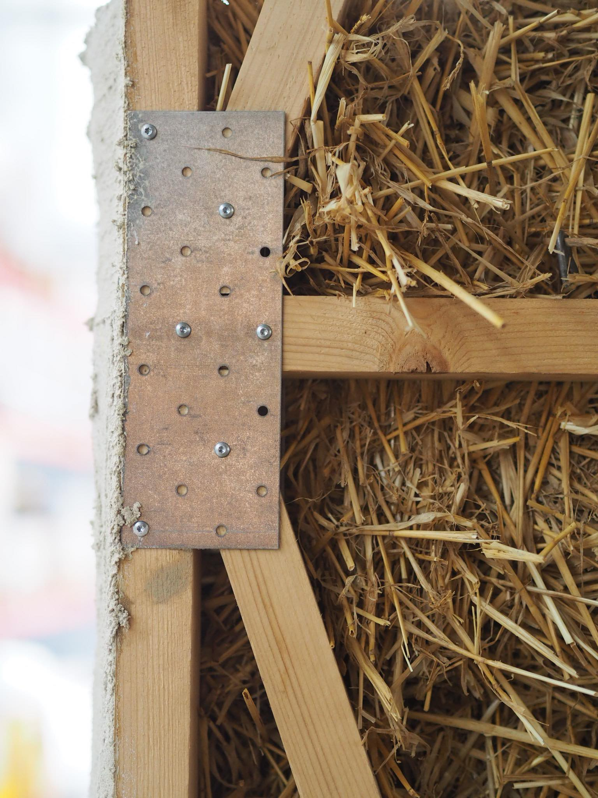
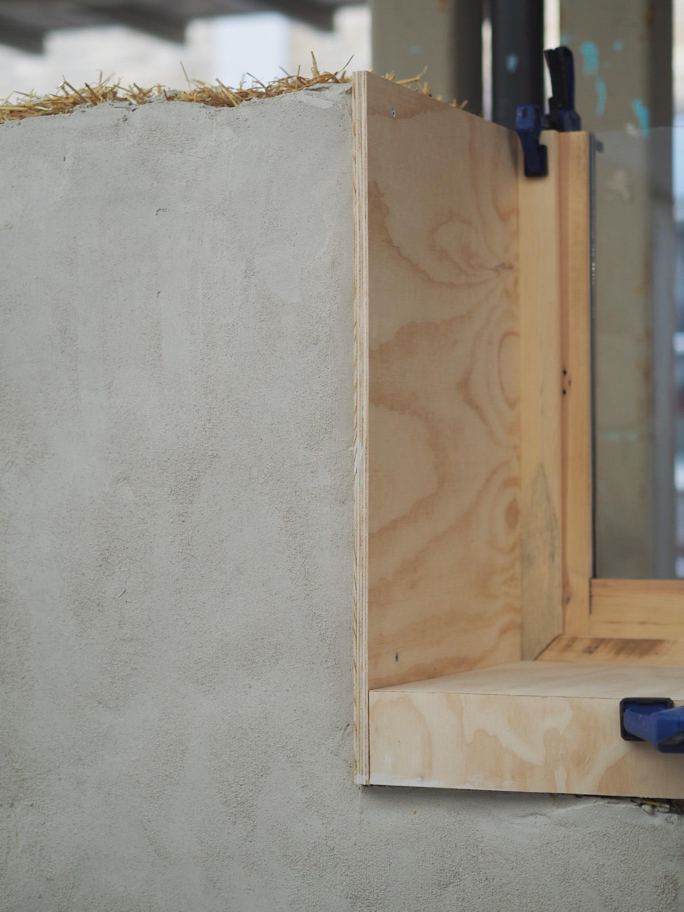
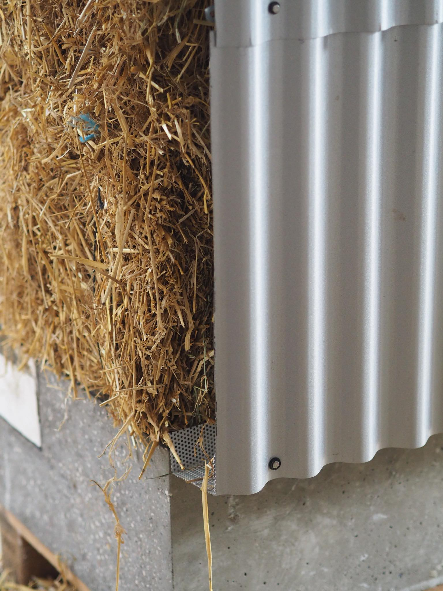
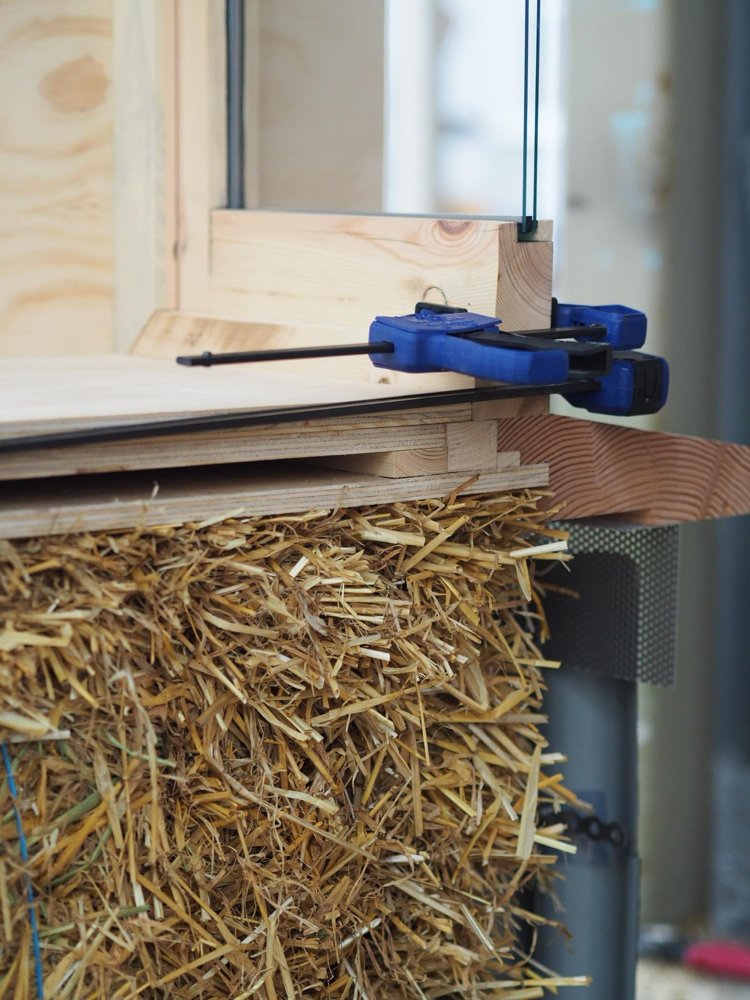

Cet ancien atelier de serrurerie a été transformé en espace de travail partagé pour une vingtaine de personnes, sans effacer les traces de son passé industriel. La charpente métallique d'origine reste visible et structure la nouvelle distribution des espaces.
Un système de verrières intérieures permet de cloisonner sans obscurcir, préservant la générosité de lumière propre aux bâtiments industriels du nord parisien. Le sol en béton ciré a été conservé et simplement poncé, gardant les marques d'usure comme une mémoire du lieu.
Le projet s'est construit en dialogue constant avec les futurs occupants, dont les usages ont directement influencé la disposition des espaces communs et des salles de réunion.




